- 十二生肖
- 1、鼠
- 🐭子鼠
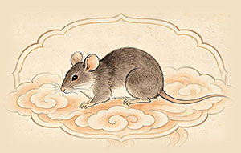
- 象征智慧与顽强的生命力。性格机敏、适应力强。
- “聪明才智”、“子孙兴旺”。例如“金鼠送福”。
- 巧夺第一：在玉皇大帝的排位赛中，鼠躲在牛身上，临近终点时一跃而下，夺得首位。从此猫鼠结仇。
- 2、牛
- 🐮丑牛
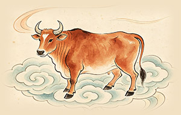
- 象征勤奋、踏实与奉献。性格忠厚、坚韧。
- “勤劳致富”、“扭（牛）转乾坤”。
- 老子骑牛：相传道家始祖老子骑青牛西出函谷关，紫气东来，牛被视为神圣的坐骑。
- 3、虎
- 🐯寅虎
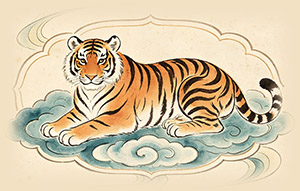
- 象征勇猛、权威与阳刚之气。性格果敢、自信。
- “虎虎生威”、“如虎添翼”。
- 虎为山君：古人称虎为“山兽之君”，传说它能吞食鬼魅，因此人们常挂虎画于中堂以镇宅避邪。
- 4、兔
- 🐰卯兔
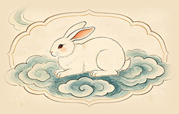
- 象征温柔、文静与机智。性格细腻、善良。
- “突（兔）飞猛进”、“玉兔呈祥”。
- 月中玉兔：神话中，嫦娥在月宫养了一只玉兔，它每天捣长生不老药，因此兔也象征着长寿与健康。
- 5、龙
- 🐲辰龙
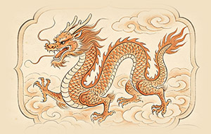
- 象征尊贵、力量与成功。性格自信、有抱负。
- “龙马精神”、“望子成龙”。
- 鲤鱼化龙：传说黄河鲤鱼跳过龙门（今龙门山）就会化身为龙，寓意逆流而上、功成名就。
- 6、蛇
- 🐍巳蛇
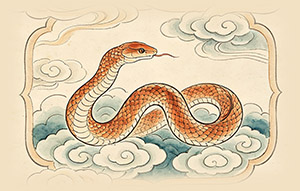
- 象征智慧、韧性与神秘。性格深沉、善于谋划。
- “富足（‘蛇’谐音‘赊’）”、“金蛇纳财”。
- 小龙之谓：古人常称蛇为“小龙”，认为它能修炼成蛟，再化为龙。在民间，家蛇（无毒的蛇）被视为守护家宅的吉兆。
- 7、马
- 🐴午马
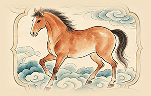
- 象征奔放、自由与气势。性格开朗、直接。
- “马到成功”、“一马当先”。
- 天马行空：传说中有一种神马名为“天马”，能日行千里，不惧水火，象征着冲破束缚、自由驰骋的精神。
- 8、羊
- 🐏未羊
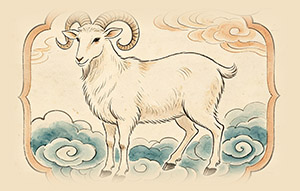
- 象征善良、温和与吉祥。性格温顺、体贴。
- “三阳（羊）开泰”、“喜气洋洋（羊）”。
- 神羊盗谷：传说神羊从天庭盗来五谷种子，带给人类，因此羊被视为给人类带来粮食的恩赐者。
- 9、猴
- 🐵申猴
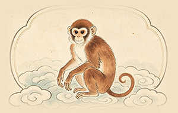
- 象征聪明、灵活。性格活泼、好奇心强。
- “聪明伶俐”、“封侯（猴）挂印”。
- 孙悟空：齐天大圣孙悟空是猴文化的代表，他神通广大、敢于反抗权威、机智乐观，是正义与勇敢的化身。
- 10、鸡
- 🐔酉鸡
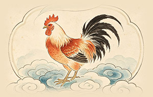
- 象征守信、勇敢与光明。性格勤奋、守时。
- “大吉（鸡）大利”、“金鸡报晓”。
- 桃都天鸡：传说东海有桃都山，山上有大桃树，枝干三千里，树顶有一只天鸡，日初出时，天鸡鸣叫，天下所有鸡随之打鸣。
- 11、狗
- 🐶戌狗
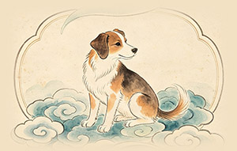
- 象征忠诚、正直与守护。性格坚定、可靠。
- “忠心耿耿”、“旺（汪）财”。
- 义犬盘瓠：传说高辛氏（帝喾）的老犬盘瓠，因平叛有功，被封为“狗王”，娶了公主，成为了南方少数民族的祖先。
- 12、猪
- 🐷亥猪
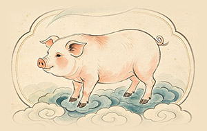
- 象征福气、财富与随和。性格豁达、乐观。
- “诸（猪）事顺利”、“福猪拱门”。
- 天蓬元帅：在《西游记》中，猪八戒本是天庭的天蓬元帅，因犯错下凡，它的形象憨厚、贪吃，为故事增添了许多乐趣。